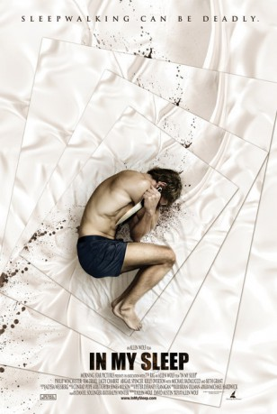

#8768 In My Sleep - Schlaf kann tödlich sein
Alternativ: In My Sleep
 
 IMDB-Wertung: 5.6 / 10
IMDB-Wertung: 5.6 / 10  Metascore: 0
Metascore: 0 
Marcus is a popular massage therapist who struggles with parasomnia, a severe sleepwalking disorder that causes him to do things in his sleep that he cannot remember the next day. When he wakes up with blood on his hands and a knife at his side, he is startled to hear that a close friend has been found stabbed to death. Marcus frantically tries to put the pieces together - could he have murdered his friend while sleepwalking to hide a dark secret between them? The police close in as Marcus investigates his own nocturnal activities, desperate to figure out what happens after he goes to sleep. His journey to uncover the truth leads him to a shocking revelation.
Jahr: 2010
Dauer: 104 Minuten
FSK: 16
Land: USA Studio: Freestyle Digital MediaTonspuren: DTS - ,
Untertitel:
Auflösung: 1080p (1920x1080) Größe: 5294 MB
Genre: Thriller, Drama, Mystery
Regisseur: Allen Wolf
Drehbuch: Allen Wolf
Soundtrack: Conrad Pope
Darsteller:
- Philip Winchester als Marcus
- Tim Draxl als Justin
 Lacey Chabert als Becky
Lacey Chabert als Becky Abigail Spencer als Gwen
Abigail Spencer als Gwen- Kelly Overton als Ann
 Amy Aquino als Detective Curwen
Amy Aquino als Detective Curwen Tony Hale als Ben
Tony Hale als Ben Kevin Kilner als Greg
Kevin Kilner als Greg- Aidan Mitchell als Young Marcus
 Michael Badalucco als Derek
Michael Badalucco als Derek Beth Grant als Evelyn
Beth Grant als Evelyn Alexandra Paul als Roxana
Alexandra Paul als Roxana- Kirsten Vangsness als Madge
 Allan Wasserman als Dr. Schwarz
Allan Wasserman als Dr. Schwarz Patrick Labyorteaux als Rob
Patrick Labyorteaux als Rob- Bellamy Young als Olivia
- Shanna Collins als Jennifer
- Marcelle Larice als Carissa
 Christopher Darga als Officer Etling
Christopher Darga als Officer Etling Larry Clarke als Officer Knachel
Larry Clarke als Officer Knachel- Robert Joseph als Officer Cooley
 Joe Nunez als Mr. Mather
Joe Nunez als Mr. Mather Bunny Levine als Rachel
Bunny Levine als Rachel Kathryn Fiore als Lisa
Kathryn Fiore als Lisa- Vanessa Evigan als Kelly
- Joy Bisco als Exotic Woman
- Nancy Sexton als Tall Woman
- Jamie Tisdale als Club Woman
 Christiann Castellanos als Babysitter
Christiann Castellanos als Babysitter- Crystal Porter Bazemore als Babysitter
- Jade Tailor als Babysitter
- Tamas Nadas als Police Officer
- Jason Rosell als Police Officer
- Jeff Torres als Police Officer
- Dan Watkins als Police Officer
- Jennifer Keller als Surprise Party Ex-Girlfriend
- Anna Lodej als Surprise Party Ex-Girlfriend
- Phoebe Price als Surprise Party Ex-Girlfriend
- Amanda Ward als Surprise Party Ex-Girlfriend
- Anna Poplevina als Surprise Party Ex-Girlfriend
- Teresa Berkin als Crime Scene Gawker (uncredited)
- Freddie De Grate als Sexaholic (uncredited)
- Aric Green als Patient (uncredited)
- Marie Lusher als Sexaholic (uncredited)
- Devin Reeve als Massage Client (uncredited)
 Aaron Jay Rome als Club Patron (uncredited)
Aaron Jay Rome als Club Patron (uncredited)- Elizabeth Manders Thompson als Hospital Receptionist (uncredited)
 Gerald Webb als Uniformed Police Officer (uncredited)
Gerald Webb als Uniformed Police Officer (uncredited)- Julia Faye West als Club Patron (uncredited)
- Natalie DuBose als Keri
Datei: X:\2010(G-M)\In My Sleep - Schlaf kann tödlich sein (2010, FSK16, 1920x1080).mkv seit 27.04.2018
Festplatte: HD 2010(G-Z)-2011(A-F)
 Es gibt insgesamt 85 Filme in der Gruppe '2010(G-M)'
Es gibt insgesamt 85 Filme in der Gruppe '2010(G-M)'